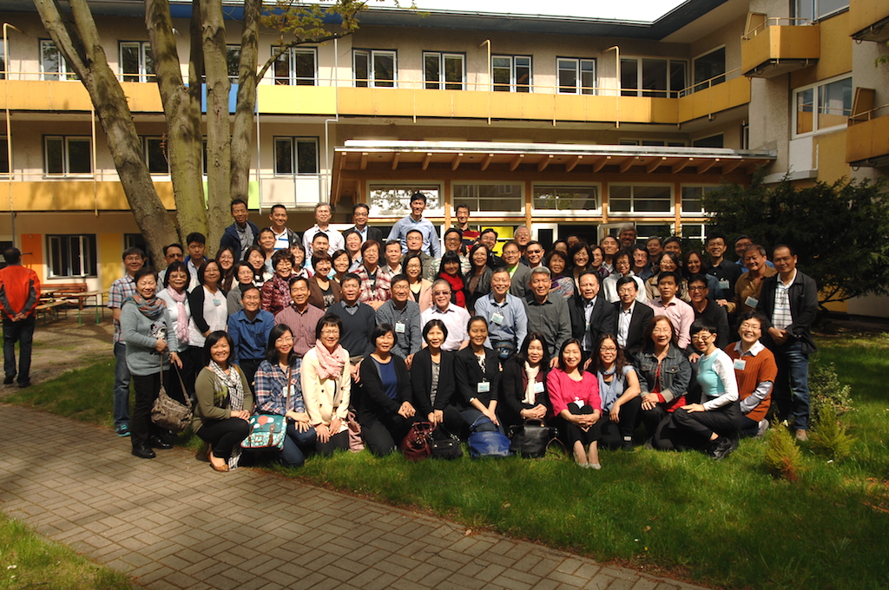

關於歐鄰華宣 About FACCES
2013年5月，在巴黎舉行的歐洲華人宣道會工場會議中，神為歐洲華人宣道會翻開了嶄新的歷史一頁，與會的70多位同工以眾數贊同，正式成立了一個屬於歐洲華人宣道會的團契——「歐洲與鄰近地區華人宣道會團契」（簡稱「歐鄰華宣」團契）。
The Lord made history for the Chinese Alliance Churches in Europe, during the European Chinese Alliance Churches Field Forum in Paris, in May 2013. With the consent of majority of all the seventy plus attendance, Fellowship of Alliance Chinese Churches in Europe and Surroundings (FACCES in brief), one that belongs to the European Chinese Alliance Churches, was officially established.
歐鄰華宣團契委員會 |
Committee of FACCES |
| 主 席：黃振才牧師（法國） 副主席：鄺維新長老（英國） 副主席：馮永昌牧師（英國） 文 書：于 超牧師（德國） 宣教顧問：簡戴德牧師（法國） |
Chairman: Rev. Thanh Nguyen (France) Vice-chairman: Elder Edward Kwong (UK) Vice-chairman: Rev. Augustine Fung (UK) Secretary: Rev. Mark Yu (Germany) Mission Consultant: Rev. Dick Kaan (France) |
聯繫 Contact Us
FACCES65 Quai de la Pie
94100 Saint-Maur-des-Fossés
France Tel: +33-9-51708320
Email: contact@facces.eu
聖誕青年學生福音營會Christmas Youth Student Evangelical CampParis, Dec 28 - Dec 31 
伦敦宣道会联祷会及团契Alliances Prayer Meeting & Fellowship in LondonToronto, July 4 - July 7 
荷兰海牙宣道会信望爱堂家庭团契Young Family Fellowship of GHL Church in The HagueToronto, July 4 - July 7 荷兰宣道会恩光堂家庭夏令会Almere Alliance Church Summer Camp near Den Bosch
青年宣教約會2016 RendezVous 2016

2015宣道會歐鄰華宣團契研討會 Berlin Conference柏林宣道會信望愛堂 Berlin Chinese Alliance Church 
2015歐鄰華宣團契研討會 Berlin Conference柏林市精華遊船 Berlin City Boating 
2015歐鄰華宣團契研討會 Berlin Conference城市牧養-梁維正長老 Shepherding in the City - Dr. Paul Leung |
歐鄰華宣目標 Goal
- 增進堂會之間的關懷
- 開展領袖培訓
- 推動宣教與植堂合作
- 發展第二代事工
- Increase mutual caring among member churches
- Train leaders
- Promote cooperation in missions and church planting
- Develop 2nd generation work
歐鄰華宣通訊 Info
致各位敬愛的牧者
主內平安,相信大家已度過一個美好的夏天,願信實的神祝福每一位主的僕人,有上頭來的 智慧繼續在歐洲各堂會牧養群羊興旺福音 在2016年中歐鄰華宣委員會已有幾次的開會商討,我們定出2017年教牧研討會的主題,經過 思考後我們都覺得宣道會一直承繼著以牧養,教導,關心堂會事務,宣教,植堂的精神,所以, 我們把大會主題定為「宣道會的精神與傳承」.感謝神,我們特別邀請到香港建道神學院 院長梁家麟博士擔任大會主要講員, 因梁博士過去在教學、牧養有豐富的經驗，同時也 是一位資深宣道會的宣教歷史專家，相信必能帶給我們很大的鼓勵，也能給教牧們提 供未來歐洲應走的路向。
時間：2017年10月9日（星期一）至12日（星期四）地點：荷蘭
請各教牧與長執們為歐鄰華宣委員會籌備這一次會議所需要的智慧與信心禱告並預留時間 出席,一起交流,學習,共同關懷未來歐洲福音的前景.
主僕 黃振才牧師
敬上
Dear Pastors:
Greetings in Christ!!
We had spent a beautiful summer and I believe that you, servants of the Lord, have experienced the blessings of our Faithful God, and received the wisdom from Above to continue pastoring the flocks and to flourish the Gospel in the various churches in Europe. The FACCES Committee has in the year 2016 met on several occasions to discuss, plan and organize for our 2017 Pastoral Forum. We strongly felt about the inherited spirit in our Alliances about pastoring, teaching, caring for church affairs, mission and church multiplication. Hence, we set the theme of our 2017 Pastoral Forum on "The Spirit and Traditions of the Alliance". We thank the Lord for confirming Rev/Dr Ka-lun Leung, President of Alliance Bible Seminary (ABS-HK) to be our main speaker. He has profound experience in teaching and pastoring, and is a highly qualified Mission historian in our Alliances. For these we anticipate great encouragement and a pointed direction for Europe and the pastors in the near future.
Date: October 9 (Monday) to October 12 (Thursday), 2017.Venue: in the Netherlands.
We covet your prayers for the Committee in organizing this Forum with wisdom and faith. We ask for your participation, learning and fellowship together in this Forum, hence to care together for the Gospel future in Europe.
Serving Him
Rev. Daniel Nguyen
各位敬愛的牧長與同工們：
感謝神的恩典，我與太太在11月2-16日被邀請在法屬圭亞那皆因宣道會與蘇里南宣道會，兩堂會各一周擔任每一年一次宣教大會的講員，除了分享宣教的信息，鼓勵堂會積極的廣傳福音之外也藉此機會認識宣道會大家庭的同工們，他們在主內的服事與熱枕是值得我與師母學習的榜樣。
蘇里南與皆因宣道會兩堂會，將會在2016年11月初（確實日期待定），舉辦每五年一次的加勒比海區宣教大會，四天三夜食宿大會供應，參加者只需負責機票，歡迎歐鄰華宣的教牧們能出席。
時間流逝如箭，我們已接近2015年的尾聲。相信各堂會都忙於預備 慶祝主耶穌誕生的喜慶與年終的感恩崇拜……
我們數算全年當中，信實的主耶穌在各方面給於我們豐富的恩典， 特別是聖誕節既將來臨，我願意以詩篇的100篇，神的話語互相鼓勵。
「當歡呼，當事奉，當來向祂歌唱，當曉得耶和華是神，當進入祂的 門，當進入他的院，當感謝稱頌祂的名」
祝 聖誕喜樂 教會興旺 福音廣傳
主僕 黃振才牧師
敬上
Dear Pastors and Co-workers:
We thank God for His Grace!! My wife and I had been invited to be the Mission Conference Speaker in 2015 during November/02-16, one week each, respectively in their annual Mission Conference of French Cayenne Alliance Church and of Suriname Alliance Church. Other than sharing missional messages, encouraging the churches in spreading the Gospel, we enjoyed the opportunity to meet up with many co-workers in our Alliance family. So much of their services and enthusiasm we both find worthy in learning about.
Both of these two churches will determine a date in early November of 2016 to host the Caribbean Mission Conference, once in every five years, to offer four days (3-nights) boarding, hence for participants to bear only their flight costs. All European pastors are invited to attend.
As we are coming to close the year of 2015, you would be busy in preparing the celebration of the Coming of Christ, and perhaps a year-end Thanksgiving Service etc.
We certainly will count the Blessings in the providence of our Faithful Lord throughout the whole year, as I forget not sharing with you, for mutual encouragement, Psalm 100 as it says, "Shout for joy to the Lord, all the earth. Worship the Lord with gladness, come before Him with joyful songs. Know that the Lord is God. Enter His gates with thanksgiving and His courts with praise; give thanks to Him and praise His Name."
Wishing you Joy in Christmas, a flourishing Church, and Gospel everywhere!!
Serving Him,
Rev. Daniel Nguyen